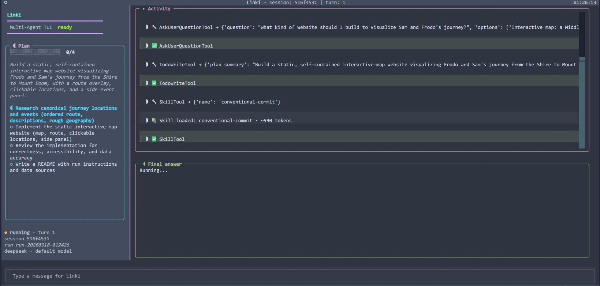
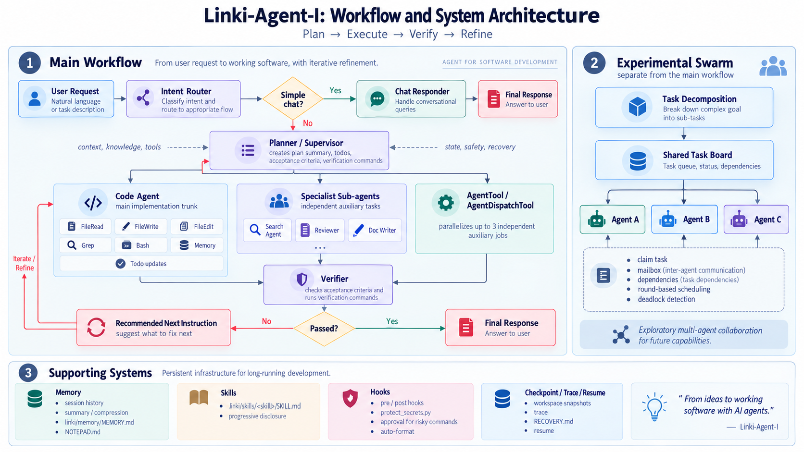
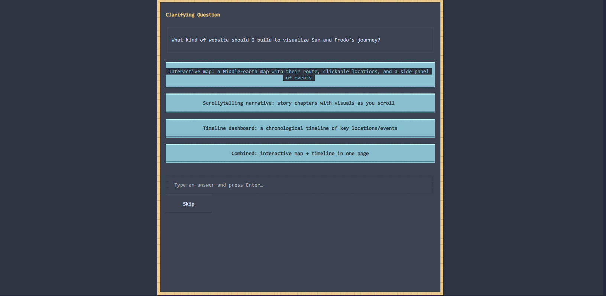
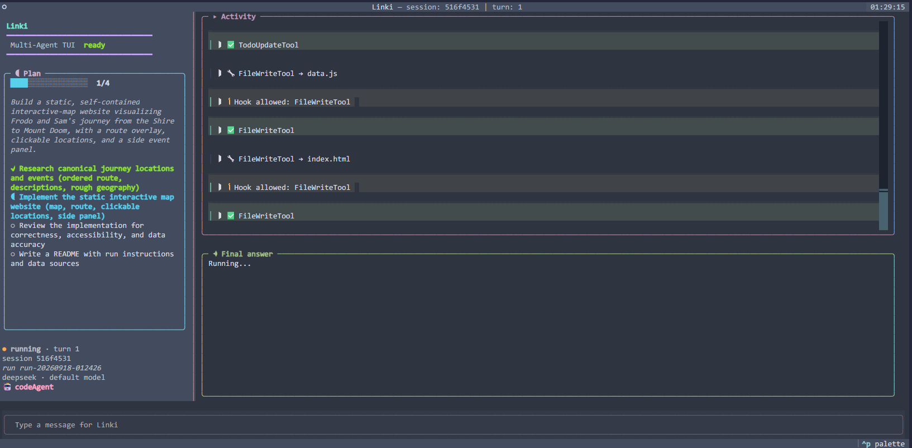
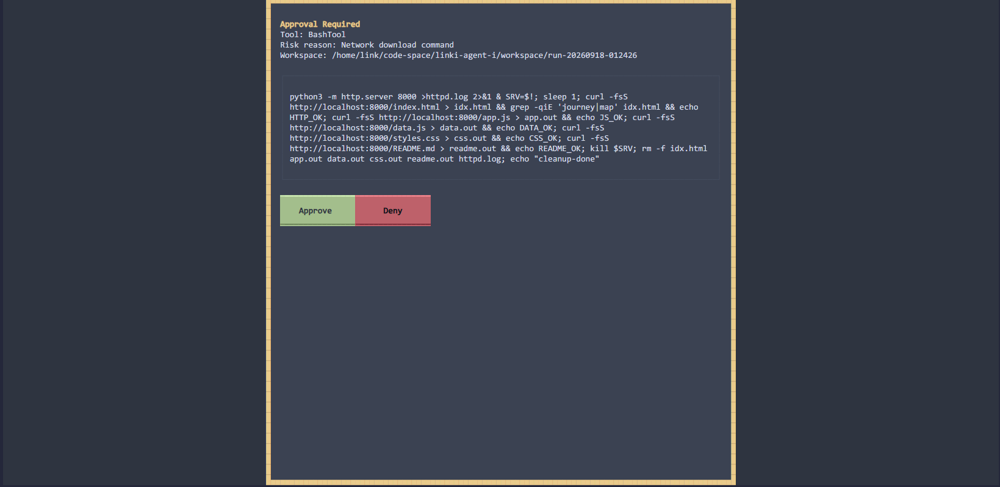
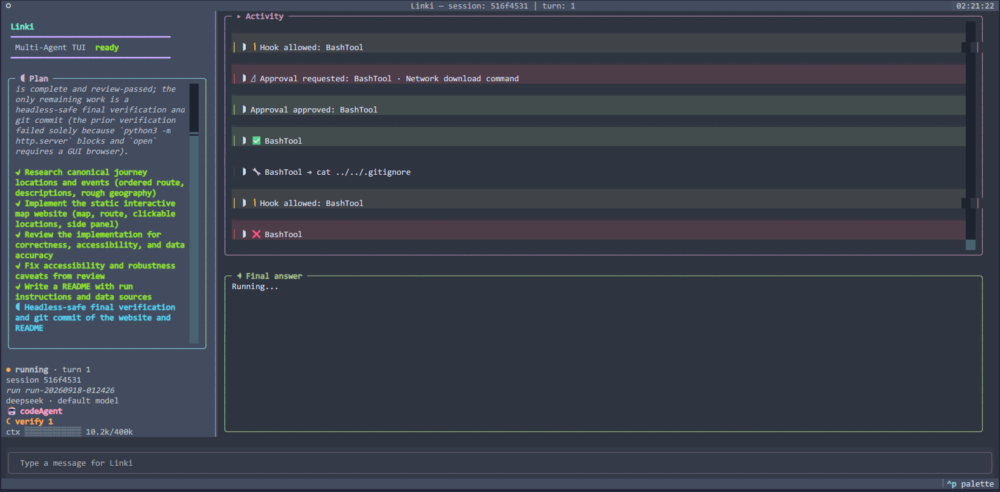
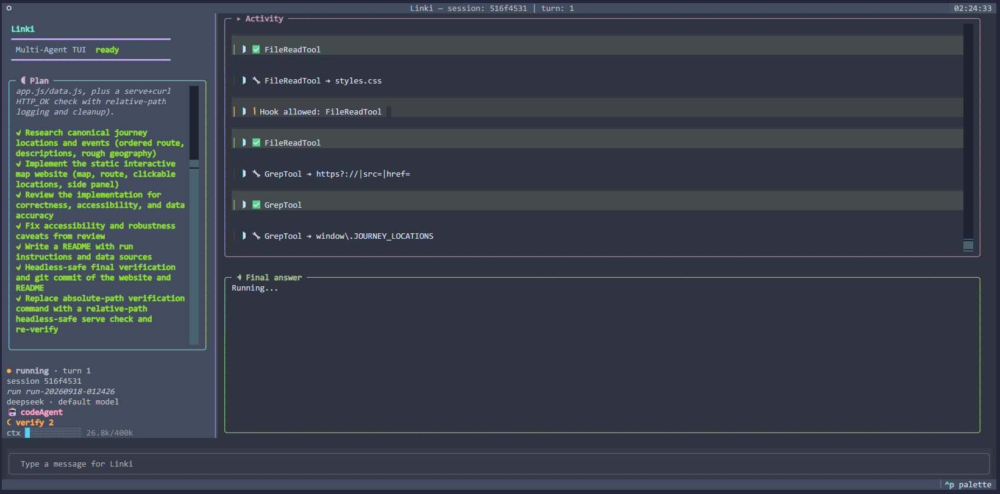
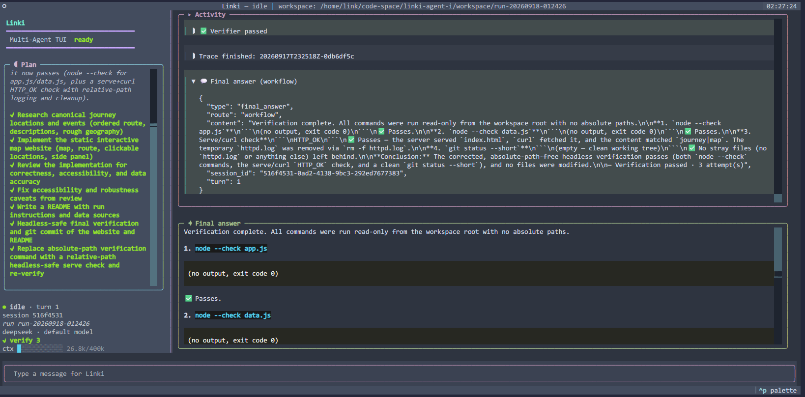

AI · Independent project · Open-source prototype
Linki-Agent-I: A Terminal Multi-Agent Coding Assistant
A Python terminal assistant that turns natural-language tasks into a visible plan, delegates research and implementation, and verifies the result inside a scoped workspace.

Role
System architecture · implementation · workflow design
Category
AI tooling · agentic systems
Core ideas
Planning, delegation, tool use, memory, verification
Supervisor
Status
Open-source research prototype
01Overview
Linki-Agent-I is a multi-agent coding assistant that runs in the terminal. A user gives it a natural-language task; the system decides whether the request is a quick conversation or a real workspace task, then plans, delegates, executes, and checks the work.
The project is an exploration of how an agent can remain useful without becoming a black box. Its live plan, activity feed, approvals, checkpoints, and recovery notes make the system’s state visible while it works.
02Motivation
Terminal coding agents combine language-model reasoning with actions that can change files or run commands. That makes orchestration and boundaries part of the interaction design, not just implementation details.
Linki-Agent-I explores a workflow where the user can follow the plan, approve risky actions, resume an interrupted run, and see when a verifier sends work back for another attempt.
03System design
An intent router first separates quick chat from task execution. For workspace tasks, a planner or supervisor publishes a dynamic checklist and delegates to two specialised agents: a search agent for web research and a code agent for implementation through workspace-scoped file and shell tools.
A context monitor can compress long histories, while a verifier checks the result against acceptance criteria and verification commands. Failed checks return the task to the planner for another bounded attempt.

04Control and recovery
Each run starts in a fresh timestamped workspace, so separate tasks do not overwrite one another. Checkpoints use a shadow Git repository and a recovery note, allowing an interrupted run to be resumed from its latest known state.
Risky shell commands can pause for inline approval, run automatically, or be denied. This gives the assistant an explicit operating boundary instead of treating every tool call as equally safe.
05Reflection
Linki-Agent-I has sharpened my interest in the relationship between agent autonomy and user control. A system can take on more of the execution burden while still exposing its plan, decisions, tool activity, and uncertainty.
That concern connects to my work on adaptive XR: in both settings, the important boundary is not only what the system can sense or do, but whether a person can understand, interrupt, and recover from its behaviour.
07Tech Stack
Language / tooling
Python 3.10+, uv or pip, Typer, Rich, Pydantic, python-dotenv, and PyYAML
Orchestration
LangGraph, planner / supervisor nodes, bounded retry, and streamed workflow events
Agent capabilities
Workspace-scoped file and shell tools, Tavily web research, checkpoints, and multi-turn sessions
Interfaces / providers
Classic CLI, Textual cockpit TUI, and OpenAI-compatible model providers including OpenAI and DeepSeek
A run in seven stages
RUN





